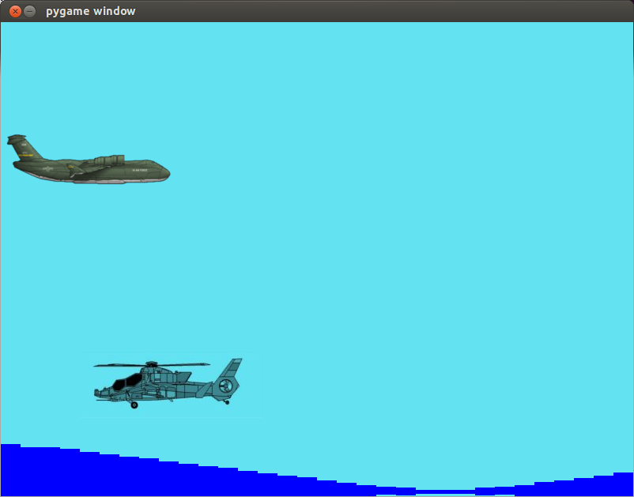
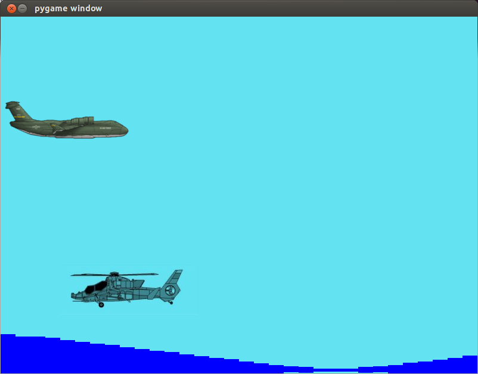
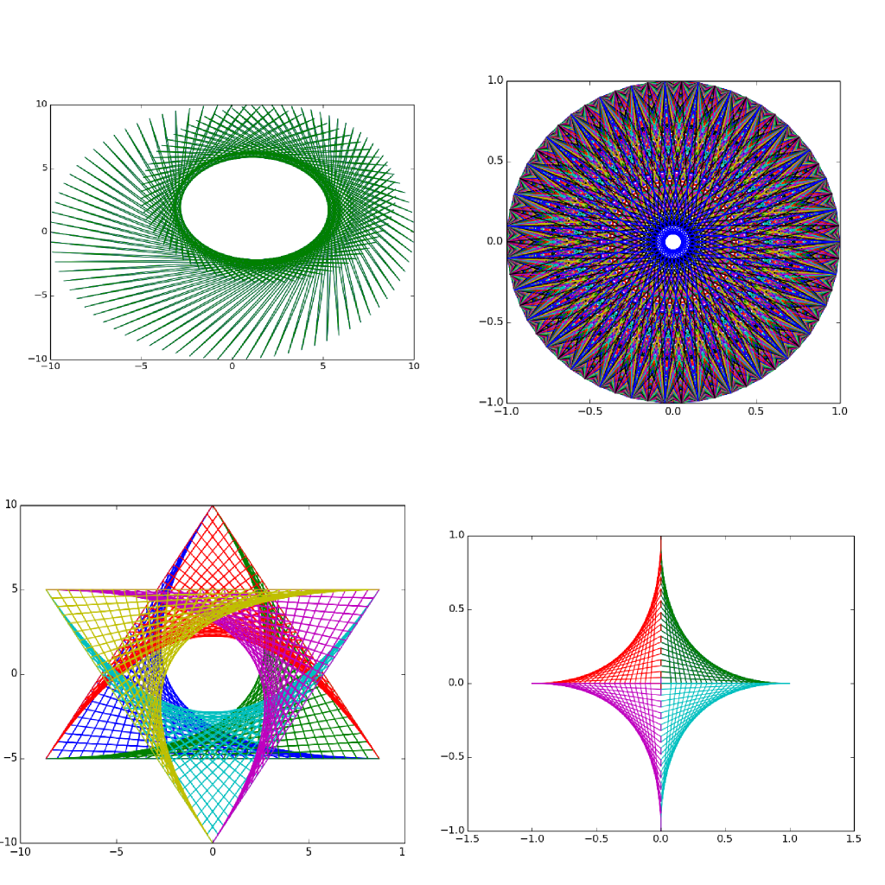
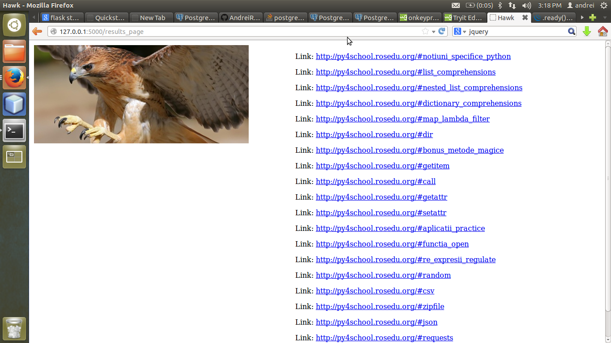
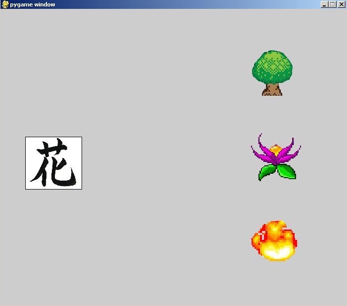
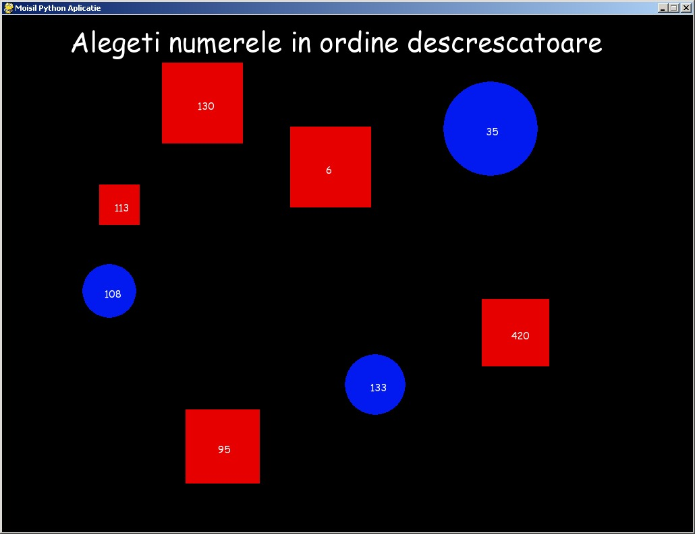
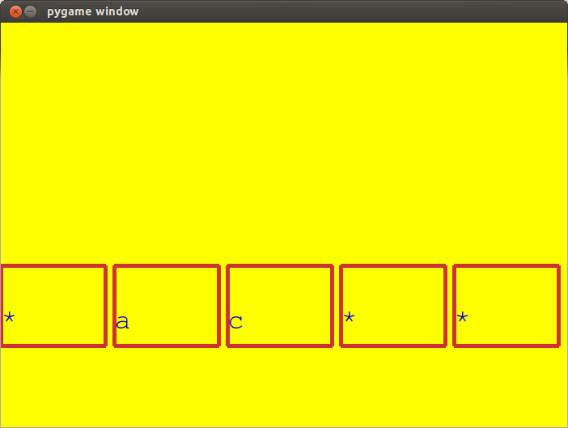
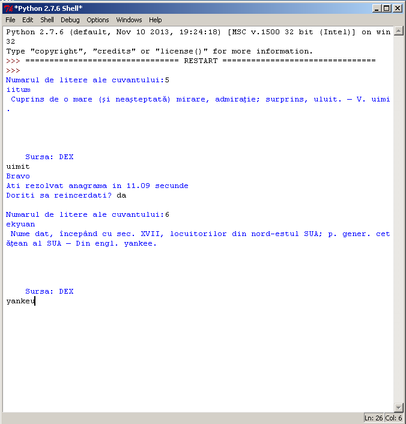
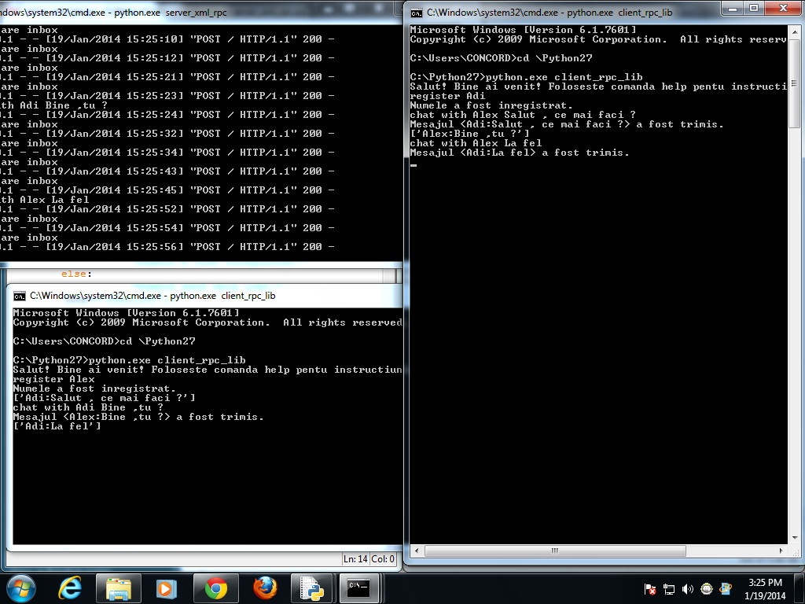
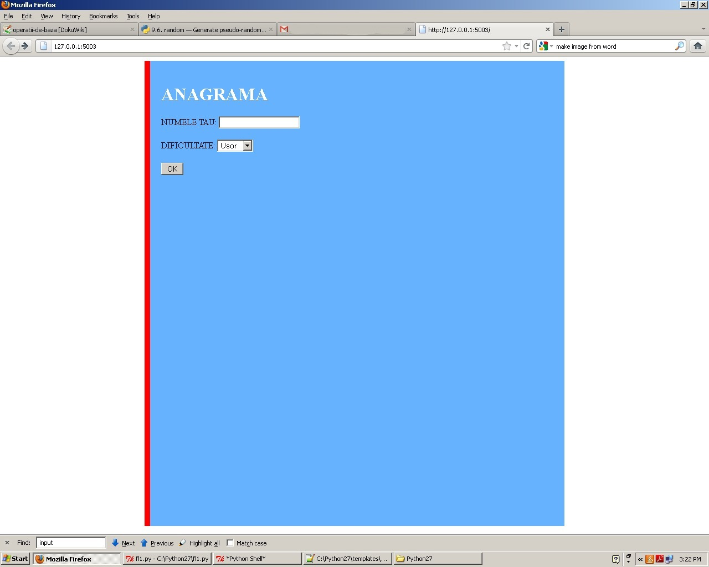

Kamikaze plane
Mihail Alexandru, Grozea Marius - Colegiul Național Gheorghe Lazăr
Un joc în care jucătorul controlează avionul și trebuie să evite o serie de elicoptere pentru a câștiga.
Program pentru susținerea introducerii programării în Python în CDS/cluburi de informatică
Aici găsiți o listă cu proiectele la care au lucrat elevii și profesorii participanți în cadrul hackathon-ului desfășurat la ultima ședință Py4School. Codul sursă, mai multe explicații și screenshot-uri pot fi accesate aici.
Mihail Alexandru, Grozea Marius - Colegiul Național Gheorghe Lazăr
Un joc în care jucătorul controlează avionul și trebuie să evite o serie de elicoptere pentru a câștiga.
prof. Marilena Vilciu - Complex Educational Lauder-Reut
Împarte segmente și cercuri în fragmente și unește două linii (curbe sau drepte).
Niculici Ionuț-Cătălin, Ștefănescu Andrei, Țucunete Alina-Mărioara - Colegiul Național Sfântul Sva
Motor de căutare care are în spate un server de baze de date. Este format din două componente - un crawler (spider) care indexează link-uri noi în baza de date, și o componentă dedicată căutării. Rezultatele sunt alese în funcție de titlu și conținut.
Alexandra Covor, Tudor Ruxandu, Alex Teiusanu, prof. Simona Popa - Colegiul Național Gheorghe Lazăr
Un joc educativ în scopul învățării rapide și interactive a limbilor străine, în cazul de față a limbii japoneze. Folosește o interfață intuitivă și prietenoasă, bazată pe asocierea dintre imagini.
Cristian Mihai Bancuta, Radu Andrei Cioaca, prof. Rodica Pintea - Colegiul National Grigore Moisil
Jocul îndeamnă utilizatorul să apese formele corecte în ordine descrescătoare. Formele sunt generate în funcție de un fișier text, ce poate fi modificat pentru a crea mai multe stagii.
Stegaru Miruna-Alexandra, Secuiu Ana-Denisa, Mărgineanu Cristian, Gănciulescu Andreea, prof. Constanța Năstase - Colegiul Național Sfântul Sava
Celebrul joc spânzurătoarea, cu interfață grafică. Cuvintele sunt încărcate de pe dexonline.
Olinescu Marius, Alexandru Selea, prof. Marilena Vilciu, prof. Laurentiu Lambrinoc - Complexul Educațional Lauder-Reut
Joc de reconstituire a unui cuvânt anagramat, preluat din dexonline, având ca indiciu și definiția din același dicționar. Încearcă să evite cuvintele fără definiție din DEX.
Balan Adrian, Lazar Alexandru - Colegiul Național „Mihai Viteazul”
O aplicație de chat în linia de comandă. Se pot conecta oricâți utilizatori prin rețea.
prof. Laurențiu Lambrinoc - Complexul Educațional Lauder-Reut
Variantă Web a jocului de anagrame făcut de echipa completă din Lauder.
{kind=link}
{kind=link}
{kind=link}
{kind=link}
{kind=link}
{kind=link}
{kind=link}
{kind=link}
{kind=link}